<!DOCTYPE html>
<html lang="en"></html>
<head>
    <style>
    ul.a {
      list-style-position: outside;
    }
    
    ul.b {
      /* list-style-position: inside; */
      margin-left: 85px;
      font:20px
    }
    </style>
</head>

<html lang="en">
    <head>
        <meta charset="utf-8" />
        <meta name="viewport" content="width=device-width, initial-scale=1, shrink-to-fit=no" />
        <meta name="description" content="" />
        <meta name="author" content="" />
        <title>Abin Binoy George Portfolio</title>
        <link rel="icon" type="image/x-icon" href="assets/img/favicon.ico" />
        <!-- Font Awesome icons (free version)-->
        <script src="https://use.fontawesome.com/releases/v5.15.4/js/all.js" crossorigin="anonymous"></script>
        <!-- Google fonts-->
        <link href="https://fonts.googleapis.com/css?family=Saira+Extra+Condensed:500,700" rel="stylesheet" type="text/css" />
        <link href="https://fonts.googleapis.com/css?family=Muli:400,400i,800,800i" rel="stylesheet" type="text/css" />
        <!-- Core theme CSS (includes Bootstrap)-->
        <link href="css/styles.css" rel="stylesheet" />
    </head>
    <body id="page-top">
        <!-- Navigation-->
        <nav class="navbar navbar-expand-lg navbar-dark bg-primary fixed-top" id="sideNav">
            <a class="navbar-brand js-scroll-trigger" href="#page-top">
                <span class="d-block d-lg-none">Abin Binoy George</span>
                <!-- <span class="d-none d-lg-block"></span> -->
            </a>
            <button class="navbar-toggler" type="button" data-bs-toggle="collapse" data-bs-target="#navbarResponsive" aria-controls="navbarResponsive" aria-expanded="false" aria-label="Toggle navigation"><span class="navbar-toggler-icon"></span></button>
            <div class="collapse navbar-collapse" id="navbarResponsive">
                <ul class="navbar-nav">
                    <li class="nav-item"><a class="nav-link js-scroll-trigger" href="#about">About</a></li>
                    <!-- <li class="nav-item"><a class="nav-link js-scroll-trigger" href="#experience">Experience</a></li> -->
                    <li class="nav-item"><a class="nav-link js-scroll-trigger" href="#education">Education</a></li>
                    <li class="nav-item"><a class="nav-link js-scroll-trigger" href="#projects">ME Projects</a></li>
                    <li class="nav-item"><a class="nav-link js-scroll-trigger" href="#ceprojects">CE Projects</a></li>
                    <!-- <li class="nav-item"><a class="nav-link js-scroll-trigger" href="#awards">Awards</a></li> -->
                </ul>
            </div>
        </nav>
        <!-- Page Content-->
        <div class="container-fluid p-0">
            <!-- About-->
            <section class="resume-section" id="about">
                <div class="resume-section-content">
                    <h1 class="mb-0">
                        Abin 
                        <span class="text-primary">Binoy George</span>
                    </h1>
                    <div class="subheading mb-5">
                        Center for Computing & Data Sciences, BOSTON UNIVERSITY  · 
                        <a href="mailto:abg309@bu.edu">abg309@bu.edu</a>
                    </div>
                    <p class="lead mb-5">I am currently a junior at Boston University, majoring in Mechanical and Computer Engineering. This portfolio is a representation of everything I learned and all the projects I worked on as an aspiring engineer.</p>
                    <div class="social-icons">
                        <a class="social-icon" href="https://www.linkedin.com/in/abinbinoygeorge/"><i class="fab fa-linkedin-in"></i></a>
                        <a class="social-icon" href="https://github.com/abingeorge07"><i class="fab fa-github"></i></a>
                        <!-- <a class="social-icon" href="#!"><i class="fab fa-twitter"></i></a>
                        <a class="social-icon" href="#!"><i class="fab fa-facebook-f"></i></a> -->
                    </div>
                </div>
            </section>
    
            <hr class="m-0" />
            <!-- Education-->
            <section class="resume-section" id="education">
                <div class="resume-section-content">
                    <h2 class="mb-5">Education</h2>
                    <div class="d-flex flex-column flex-md-row justify-content-between mb-5">
                        <div class="flex-grow-1">
                            <h3 class="mb-0">Boston University, Boston, MA</h3>
                            <div class="subheading mb-3">Bachelor of Science</div>
                            <div>Masters & PhD in Computer Engineering</div>
                        </div>
                        <div class="flex-shrink-0"><span class="text-primary">September 2023 - Present</span></div>
                    </div>

                    <div class="d-flex flex-column flex-md-row justify-content-between mb-5">
                        <div class="flex-grow-1">
                            <h3 class="mb-0">Boston University, Boston, MA</h3>
                            <div class="subheading mb-3">Bachelor of Science</div>
                            <div>Mechanical Engineering and Computer Engineering</div>
                            <p>Double Major</p>
                            <!-- <p>GPA: 3.8</p> -->
                        </div>
                        <div class="flex-shrink-0"><span class="text-primary">September 2019 - May 2023</span></div>
                    </div>
                    <div class="d-flex flex-column flex-md-row justify-content-between">
                        <div class="flex-grow-1">
                            <h3 class="mb-0">International School of Choueifat, Abu Dhabi, UAE</h3>
                            <div class="subheading mb-3">High School Diploma</div>
                            <p>GPA: 4.0</p>
                        </div>
                        <div class="flex-shrink-0"><span class="text-primary">September 2015 - May 2019</span></div>
                    </div>
                </div>
            </section>
            <hr class="m-0" />
            <!-- Skills-->
           <section class="resume-section" id="projects">
                 <div class="resume-section-content"> 
                    <h2 class="mb-5">ME Projects</h2>
                <!-- Portfolio Section-->
                 <class="container">
                <!-- Portfolio Section Heading-->
                <h2 class="page-section-heading text-center text-uppercase text-secondary mb-0">ME 360: Product Design</h2>
                <!-- Icon Divider-->
                <div class="divider-custom">
                    <div class="divider-custom-line"></div>
                    <!-- <div class="divider-custom-icon"><i class="fas fa-star"></i></div> -->
                    <div class="divider-custom-line"></div>
                </div>
                <!-- Portfolio Grid Items-->
                <div class="row justify-content-center">
                    <!-- Portfolio Item 1-->
                    <div class="col-md-6 col-lg-4 mb-5">
                        <div class="portfolio-item mx-auto" data-bs-toggle="modal" data-bs-target="#portfolioModal1">
                            <div class="portfolio-item-caption d-flex align-items-center justify-content-center h-100 w-100">
                                <div class="portfolio-item-caption-content text-center text-white"><i class="fas fa-plus fa-3x"></i></div>
                            </div>
                            <!---->
                        </div>
                    </div>
                    <h2 class="page-section-heading text-center text-uppercase text-secondary mb-0">Assignment 1: Analyzing the Design of a Garbage Compactor</h2>
                    <p class="lead mb-5">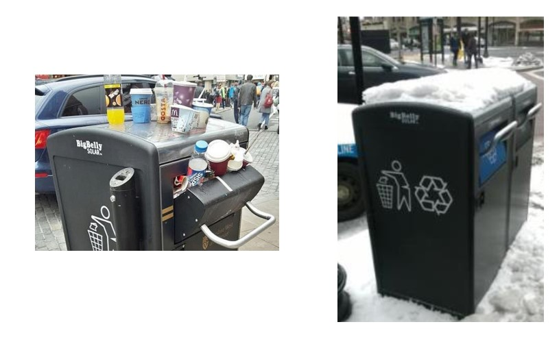 </p>
                    <h3 class="mb-0">Purpose</h3>
                    <p class="lead mb-5">The main purpose of this garbage compactor is to sense when the garbage can is almost full and try to compact the waste 
                    using solar powered energy,  which in turn will increase the bin’s capacity. 
                    However, there are design flaws that will be addressed in this assignment.</p>
                    
                    <h3 class="mb-0">Problem Statement</h3>
                    <ul style="padding-left:40px">
                        <li class="lead mb-5"> One problem of this garbage compactor is the problem of overflow, meaning, when the garbage compactor is at its maximum capacity, 
                            even after the waste is compressed, civilians still try to squeeze in the trash, 
                            which ultimately causes trash to overflow from the garbage bin. 
                            This essentially makes the garbage bin unhygienic and a health hazard to civilians.</li>
                        <li class="lead mb-5"> Another problem is that snow or other objects can cover the solar panels, 
                            which ultimately makes the garbage compactor less effective than the ideal scenario of utilizing renewable energy.</li>
                    </ul>
                    <h3 class="mb-0">Solution to Overflow</h3>
                    <p class="lead mb-5">One solution is to have a lock mechanism that will lock the garbage bin using a linear actuator when the sensors detect that the garbage bin 
                        is at maximum capacity. The following sketch is a design solution that solve the overflow problem.
                        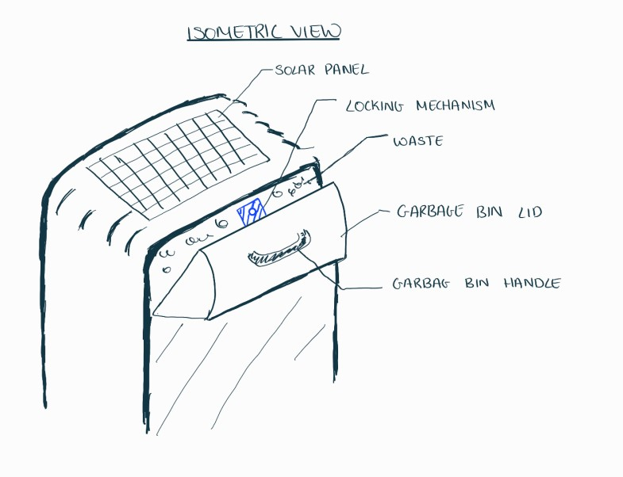
                        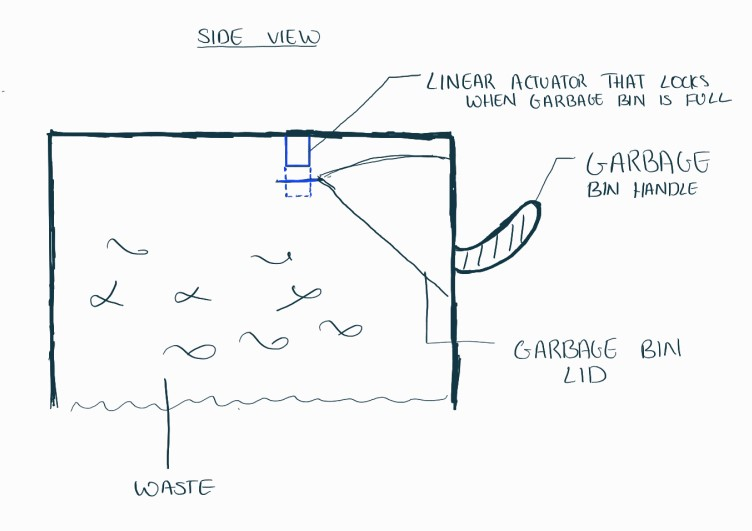</p>
                        <h3 class="mb-0">Solution to Covered Solar Panels</h3>
                    <p class="lead mb-5"> There are different scenarios to how the solar panels are covered, either by an object placed by civilians over 
                        the solar panels or by snow being piled up over the solar panels as seen in the above images.<br><br>
                        For both scenarios, a supplementary battery that stores and holds energy can solve this problem. In the case of an object covering the solar panels, the supplementary battery can be 
                        used to compact the waste rather than relying on the solar panels. In the case of snow, the supplementary battery can be connected to a heating device that melts aways the piled-up snow. 
                        The following sketch is a design solution to solve the covered solar panels problem.
                        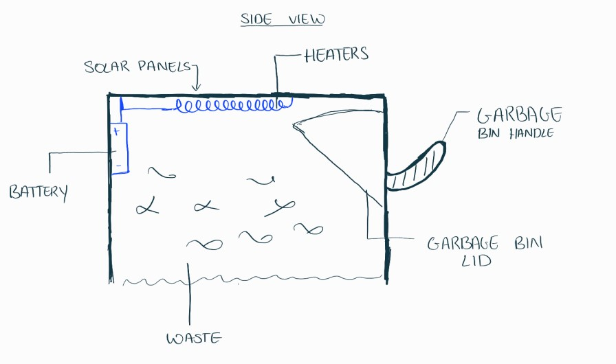</p>

                        <h2 class="page-section-heading text-center text-uppercase text-secondary mb-0">Assignment 2: Design of a Skateboard Deck</h2>
                        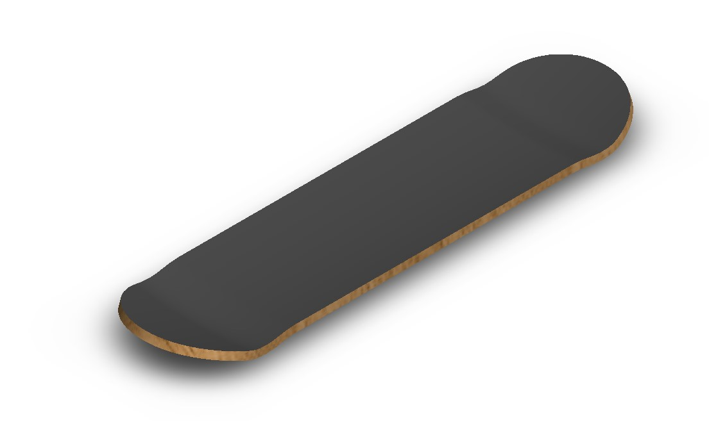
                        <h3 class="mb-0">Assignment Objectives</h3>
                        <p class="lead mb-5"> The main assignment objective was to design a skateboard deck that meets the following constraints.</p>
                        <h3 class="mb-0">Constraints</h3>
                        <ul>
                            <li>The maximum vertical displacement should not exceed 0.375 inches, when a load of 180 lbf is applied onto the skateboard deck.</li>
                            <li>The maximum stress on the skateboard should not exceed a third of the yield stress of the material. (Factor of Safety of 3)</li>
                          </ul>
                          <h3 class="mb-0">Finite Element Analysis</h3>
                          <p class="lead mb-5">After modeling the skateboard deck with dimensions calculated via a numerical analysis, a Finite Element Analysis was 
                              conducted to test the maximum vertical displacement and maximum stress on the skateboard deck.
                            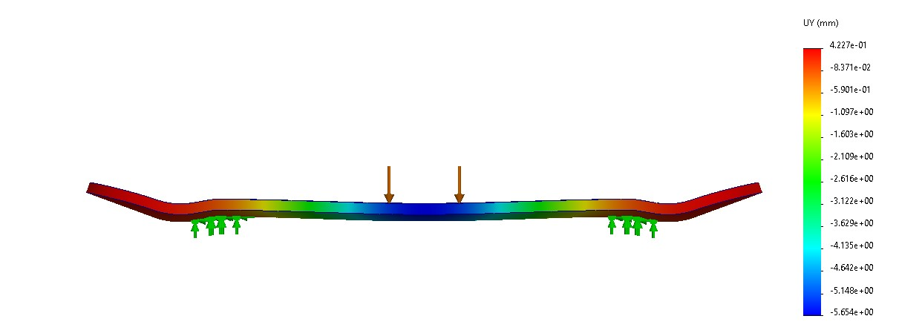
                            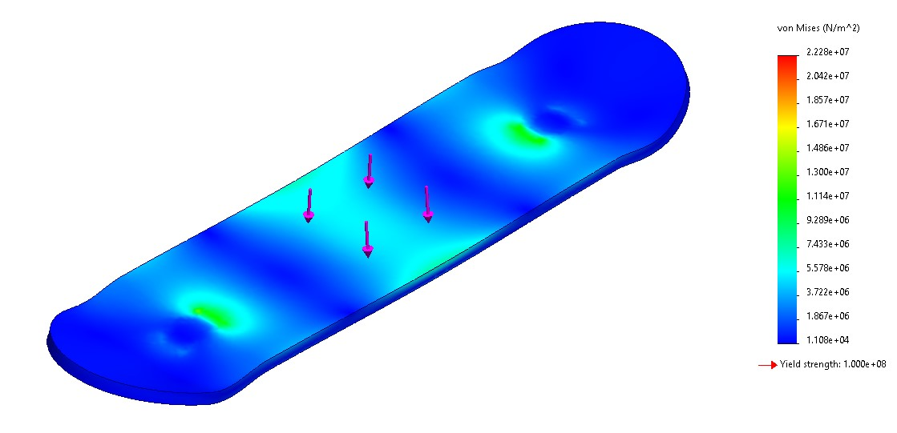</p>
                            <p class="lead mb-5">From the test, it was determined that the maximum vertical displacement was 5.6 mm, 0.22 in, 
                                much less than the maximum vertical displacement. Moreover, the maximum stress on the skateboard deck was only 23 MPa, 
                                which is much less than a third of the yield stress of the material. (Yield Stress = 100 MPa)</p>
                            <p class="lead mb-5">For a more technical analysis on designing the skateboard deck, please follow the link below</p>
                            <p><a href="assets/img/portfolio/skateboard.pdf">ME360_AbinBinoyGeorge_Assignment2</a></p>
                            <p><a href="assets/img/portfolio/skateboard_drawing.pdf">SkateboardDeck_CAD_Drawing</a></p>
                            <p><a href="assets/img/portfolio/ME360_A2_Skateboard.eprt">ME360_A2_Skateboard.eprt</a></p>


                        <h2 class="page-section-heading text-center text-uppercase text-secondary mb-0">Assignment 3: Autonomous Chessboard</h2>
                        <p class="lead mb-5">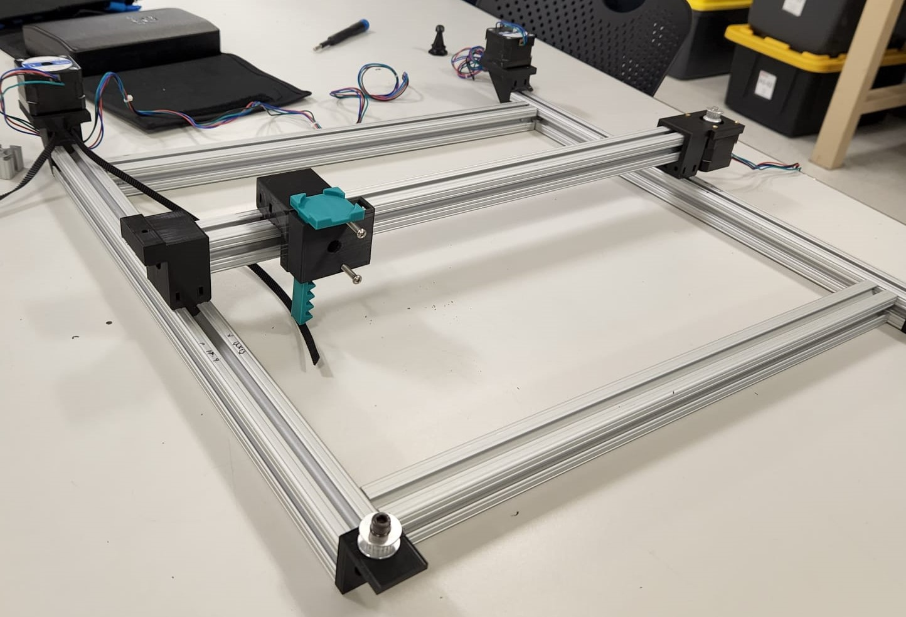</p>
                        <h3 class="mb-0">Assignment Objectives</h3>
                        <p class="lead mb-5"> The main assignment objective was to design a robot that has 2.5 degrees of freedom. As a team, we decided to create a chessboard that enabled a user to play chess against a computer on a physical board rather than using an application.
                            The basic functionality of the chessboard is by using stepper motors and a belt to move the end effector in the X and Y directions. The end effector is a rack and pinion system that holds a magnet, which enables the end effector to attract a chess piece when extended. 
                            All the chess pieces are inserted with an iron screw, which enables the magnet on the end effector to attract the chess pieces only when the rack and pinion system is extended. 
                            This is the basic structure of the autonomous chessboard. More information on the design and code can be found below. Moreover, links to the portfolios of my teammates can be found at the end of this section.   </p>
                        <h3 class="mb-0">Design Sketches</h3>
                        <p class="lead mb-5"> The first step we took in finishing this assignment was sketching designs for the autonomous chessboard.
                            The following images shows the rough sketches we made before desining the autonoumous chessboard. 
                            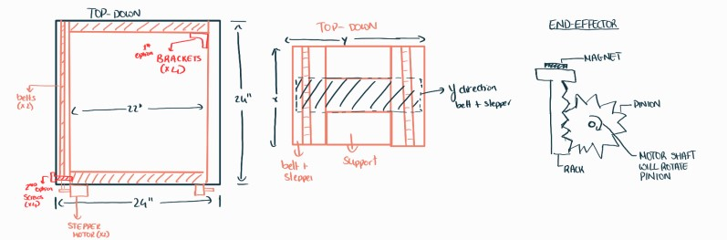</p>
                        <h3 class="mb-0">Design CAD</h3>
                        <p class="lead mb-5"> The next step of the project was to design each individual component that should be 3D printed to build the structure of the autonoumous chessboard. The school provided us with the following:
                        <ul class="b">
                            <li>8020 Aluminum Extrusions</li>
                            <li>3 Stepper Motors + 1 Small Stepper Motor</li>
                            <li>Belts and Pulleys</li>
                            <li>One Arduino MEGA</li>
                          </ul>
                        </p>

                        <p class="lead mb-5">The following image is the CAD model for the end-effector. The end-effector is based on a rack and pinion system on which the magnet is held.
                            The basic idea of this model is that a smaller stepper motor is connected to the rack and when the motor rotates, it also rotates the rack. This rotation of the rack 
                            will subsequently linearly move the pinion on which the magnet resides. Through this motion, we were able to move the magnet up and down in order to attract a specific piece 
                            and move it around on the chessboard.
                             
                        </p>
                        <p class="lead mb-5">The following image is the CAD model for the pulley-slider mechanism. This model is responsible for tensioning the belts, which is essential 
                            in moving the end-effector in the X and Y directions. This model has two slots; one end of the belt is passed through one slot and then wrapped around the relevant extrusion bar
                            and the other end of the belt is pushed through the other slot. Moreover, one slot is angled so that the belt could be tensioned simply by pulling on the belt. In order to keep the belt
                            in place, two screws were used to clamp the belt ends to pulley-slider.
                             
                        </p>
                        <p class="lead mb-5">The following image shows the assembly model of the whole mechanical part of the autonomous chessboard. It should be noted that other components were also 
                            modeled, such as brackets connecting the motor or pulley to the extrusions. These models can be seen in the image below. Once these designs were complete, we, then, 3D printed 
                            all these parts to construct the autonomous chessboard.
                            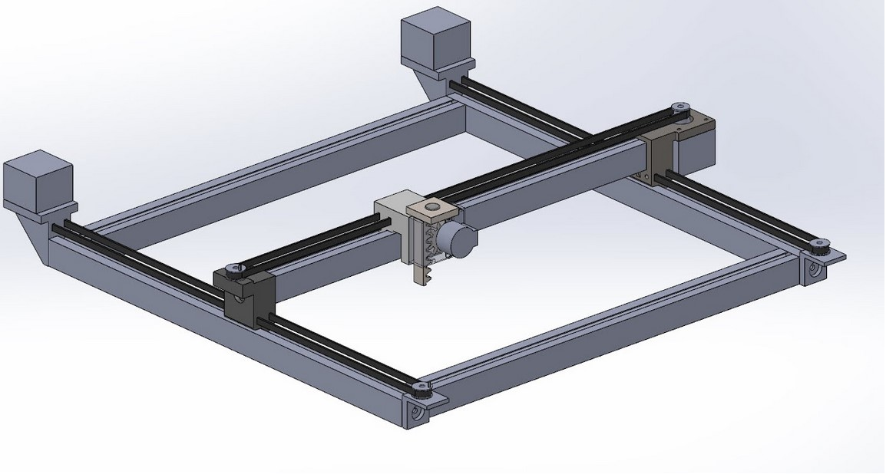 
                        </p>

                        
                        <h3 class="mb-0">Code and Controls Implementation</h3>
                        <p class="lead mb-5">For the coding element of this assignment, an Ardunio script and a Python script were used to control the autonomous chessboard.             
                         The python script included a stockfish library that enabled python to send moves to Stockfish, a free and open source chess-engine, and recieves the stockfish's best move. 
                        These moves were send to the arduino IDE, which then decides how much to move in the x,y directions and if the end-effector should be 
                        should rise or stay down. It should also be noted that with this chessboard, the user can either move his/her own pieces or can allow the chessboard to move it for them.
                        The input for the moves should be entered by the user on the computer. The code for this assignment can be found on  <a href="https://github.com/abingeorge07/autonomousChess">GitHub</a>.  The following flowchart shows the basic structure of how the code is working.
                         </p>

                        <h3 class="mb-0">Testing Phase</h3>
                        <p class="lead mb-5">The following are some videos of us testing out the controls of the autonomous chessboard.
                            It should be noted that there were many roadblocks we faced as a team and we collaboratively came up with solutions to overcome these roadblocks.
                        </p>
                        <video width="180" height="700"  controls muted>
                            <source src="assets/img/portfolio/vid8.mp4" type="video/mp4">
                            <!-- <source src="assets/img/portfolio/vid1.mp4.mov" type="video/mov"> -->
                          Your browser does not support the video tag.
                        </video> 
                        <p><br></p>
                        <video width="180" height="700"  controls muted>
                            <source src="assets/img/portfolio/vid11.mp4" type="video/mp4">
                            <!-- <source src="assets/img/portfolio/vid1.mp4.mov" type="video/mov"> -->
                          Your browser does not support the video tag.
                        </video> 
                        <p><br></p>
                        <video width="180" height="700"  controls muted>
                            <source src="assets/img/portfolio/vid9.mp4" type="video/mp4">
                            <!-- <source src="assets/img/portfolio/vid1.mp4.mov" type="video/mov"> -->
                          Your browser does not support the video tag.
                        </video> 

                        <p><br><br></p>
                        <h3 class="mb-0">Future Improvements</h3>
                        <p class="lead mb-5">The following improvements could be made to further improve the product.</p>
                        <ul class="b">
                            <li>Using a Raspberry Pi, which will eliminate the need for a computer</li>
                            <li>Using extra sensors, such as the Hall effect sensor, or cameras to determine user moves. This way there will no need for the user to input every move.</li>
                            <li>Better casing for the electronics, such that no wires will be protruding from the chessboard.</li>
                          </ul>
                        </p>
                        <h3 class="mb-0">Chessboard in Action</h3>
                        <p class="lead mb-5">The following videos show some of the autonomous chessboard's functionality, while playing with a user (Miguel Ianus-Valdivia).</p>
                        
                        <video width="180" height="700"  controls>
                            <source src="assets/img/portfolio/vid1.mp4.mp4" type="video/mp4">
                            <!-- <source src="assets/img/portfolio/vid1.mp4.mov" type="video/mov"> -->
                          Your browser does not support the video tag.
                        </video> 
                        <p><br></p>
                        <video width="180" height="700"  controls muted>
                            <source src="assets/img/portfolio/vid12.mp4" type="video/mp4">
                            <!-- <source src="assets/img/portfolio/vid1.mp4.mov" type="video/mov"> -->
                          Your browser does not support the video tag.
                        </video> 
                        <p><br><br></p>
                        <h3 class="mb-0">Teammates</h3>
                        <p class="lead mb-5"><a href="https://aamrit.wixsite.com/portfolio">Aayush Amrit</a><br><a href="https://sites.google.com/bu.edu/adambahlous-boldi/home">Adam Bahlous-Boldi</a><br><a href="http://kylefieleke.com/">Kyle Fieleke</a></p>


                        <h2 class="page-section-heading text-center text-uppercase text-secondary mb-0">Assignment 4: Mechanism Design</h2>
                        <h3 class="mb-0">Assignment Objectives</h3>
                        <p class="lead mb-5">The main objective of this assignment was to create a mechanism such that a tray on a trash can 
                            can throw all the contents on the tray into an opening on the back of the trash can. The following image is a visual representation of the assignment objective. 
                        
                            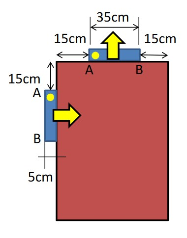
                        </p>
                        <h3 class="mb-0">Math Illustrations Implementation</h3>
                        <p class="lead mb-5">The first step was to create a skeleton sketch of the mechanism on Math Illustrations. Using this sketch, the dimensions for the four bar link could be found.
                            The initial and final position of the tray was given in the problem statement. Since the tray is a 3-dimensional object, two points
                            on the tray were required to achieve the required motion. First, a segment from one point of the tray from its initial position to its final position was made and this was repeated for a second point.
                            Then, the perpendicular bisector of both these segments were drawn and was found to overlap each other. This means that bars connecting the trash can to the tray should originate from a point on this common
                            perpendicular bisector. Moreover, it was aldo determined that the intermediate position of the tray should be collinear to the perpendicular bisector, else the tray would rotate such that all the contents on the 
                            tray will fall on the floor. Once the intermediate position was found, the next step was the draw segments of the specific two points on the tray from the initial position to the intermediate position and from the intermediate
                            position to the final position. Then, perpendicular bisectors of the two segments for each of the specific points were contructed and the intersection of this points is the pivot point to rotate the corresponding point on the tray from the 
                            initial position to the intermediate position and to the final position. It was during this process I found out that the two points on the tray should be chosen on the right half of the tray, when the tray is in the horizontal position. 
                            If points from the left half of the tray was chosen, then the pivot point would not be on the trash can rather over the trash can. It should also be said that one of the problem constraints was that the pivot points should be on the trash can and 
                            no extensions from the trash can is allowed. Finally, the distance of the crank bars were found by finding the distance from the pivot points on the trash can to the specific points on the tray. The following image
                            shows the work conducted on Math Illustrations in order to determine the dimensions of the bars.
                            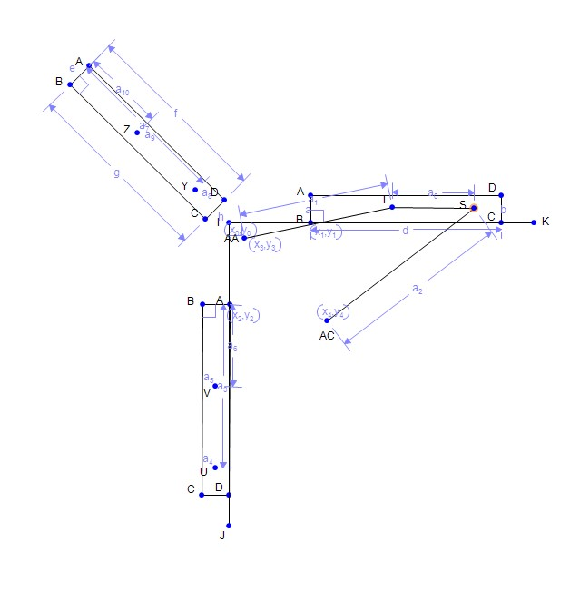     </p>
                        <h3 class="mb-0">CAD Implementation</h3>
                        <p class="lead mb-5">Once the dimesions were found using Math Illustrations, the next step was creating the CAD model. First, the trash can was created on CAD, then, the appropriate holes
                            were created on trash can for the pivot points. These position of these points were determined from Math Illustrations. Next, the tray was created and two holes were created on the tray.
                            The dimensions of the tray was determined from the problem statement and the positions of the holes were found from Math Illustrations. Finally, two bars were created to connect the pivot points
                            on the trash can to the corresponding points on the tray. The dimesions for these bars were also found from Math Illustrations. The last step in creating the CAD model was building the assembly and 
                            mating all the parts appropriately. The following image shows the final CAD model for the trash can with the tray and the 4-bar mechanism.  
                            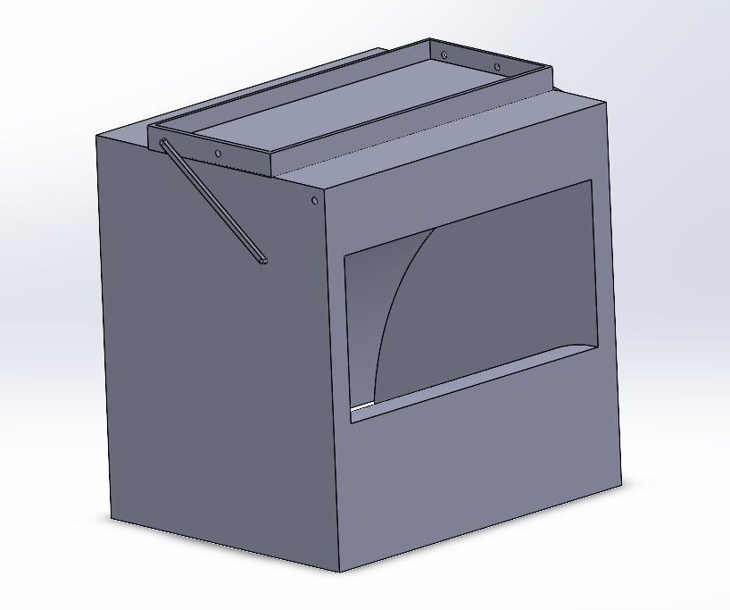 
                        </p>

                        <h3 class="mb-0">Motion Analysis</h3>
                        <p class="lead mb-5">The last part of this assignment was to create a motion analysis of the 4 bar mechanism. The same principles used in exercise 4 of this course 
                            was used in this assignment (more information on exercise 4 can be found below). The basic idea was to use the motion analysis tool from Solidworks and assign one of
                        the bars on which the motor will act upon. After this, the motion of the motor was set to oscillation since the motion should include moving the tray from the inital position to the final position and back to the initial
                        position. With this part done, all that was left to do was run the motion analysis. The following videos show the output of the motion analysis done by Solidworks.
                    </p>
                    <video width="180" height="500" controls>
                        <source src="assets/img/portfolio/vid4.mp4" type="video/mp4">
                        <!-- <source src="assets/img/portfolio/vid1.mp4.mov" type="video/mov"> -->
                      Your browser does not support the video tag.
                    </video> 
                    <video width="180" height="500" controls>
                        <source src="assets/img/portfolio/vid5.mp4" type="video/mp4">
                        <!-- <source src="assets/img/portfolio/vid1.mp4.mov" type="video/mov"> -->
                      Your browser does not support the video tag.
                    </video> 
                    <video width="180" height="500" controls>
                        <source src="assets/img/portfolio/vid6.mp4" type="video/mp4">
                        <!-- <source src="assets/img/portfolio/vid1.mp4.mov" type="video/mov"> -->
                      Your browser does not support the video tag.
                    </video> 
                    <video width="180" height="500" controls>
                        <source src="assets/img/portfolio/vid7.mp4" type="video/mp4">
                        <!-- <source src="assets/img/portfolio/vid1.mp4.mov" type="video/mov"> -->
                      Your browser does not support the video tag.
                    </video> 
                    <p><br><br></p>
                        
                          <h2 class="page-section-heading text-center text-uppercase text-secondary mb-0">Exercise 1: Sketches from First Session</h2>
                          <h3 class="mb-0">Exercise Objectives</h3>
                          <p class="lead mb-5"> The main objective of this exercise was to attempt to sketch a design that can effectively
                             solve a particular problem. A good sketch of a product should be clear and understandable. Following are key attributes of a good sketch
                             <ul class="b">
                                <li>Firm trace</li>
                                <li>Different line weights</li>
                                <li>Neat notes when necessary</li>
                                <li>Rational Layout</li>
                              </ul>
                            </p>
                            <p class="lead mb-5">The problem posed by the professor was to sketch a design that can prevent dead leaves from piling up and blocking the drainage system. The following image is a visual example of the problem.<br>
                            
                        </p>
                            <h3 class="mb-0">Solution Sketches</h3>
                            <p class="lead mb-5">The following is a sketch of a solution to the above posed problem.
                            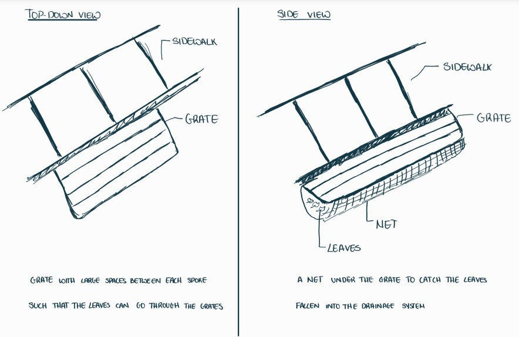</p>
                            
                            
                            
                            <h2 class="page-section-heading text-center text-uppercase text-secondary mb-0">Exercise 2: Bell Design Using Finite Element Analysis</h2>
                            <p class="lead mb-5"> 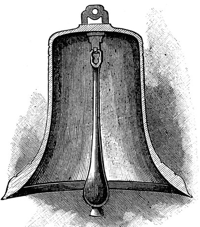 </p>
                            <h3 class="mb-0">Exercise Objectives</h3>
                            <p class="lead mb-5"> 
                                The goal of this exercise was to design a bell on CAD, then conduct a frequency simulation to find out the resonant frequencies of the bell. Finally, these resonant frequencies are used to predict the sound the bell would make using MATLAB.
                            </p>
                            <h3 class="mb-0">CAD Implementation</h3>
                            <p class="lead mb-5">
                                Using the image above, a sketch of the cross-section of the bell was made in Solidworks. Then this sketch was revolved around the centerline axis to create a 3D model of the bell. The following image shows the 3D model of the bell created in Solidworks.
                             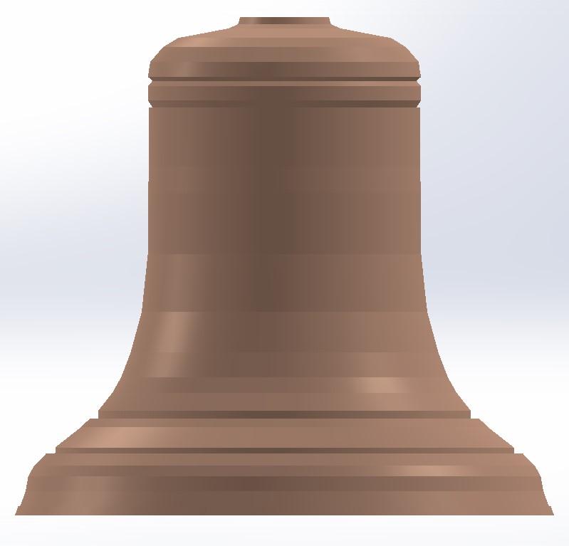 </p>
                            
                             <h3 class="mb-0">Frequency Study</h3> 
                             <p class="lead mb-5">Before starting the frequency study, a split line was created on the top plane of the bell. This was done so that in the frequency study a small force can be applied to the split plane of the bell to simulate the bell being hung by a rope.
                                Moreover, it should be noted that the material of the bell was chosen to be "commercial broze," this was done since most bells are made out of bronze.
                                Once this was done, a new frequency study was created with the number of frequencies set to 10. Then, the fixtures on the bell was created by applying a force on the split plane created earlier; this essentially simulates the bell being hung.
                                The last step was to create the mesh and finally run the simulation. The following image shows 1 of the 10 frequency modes.
                                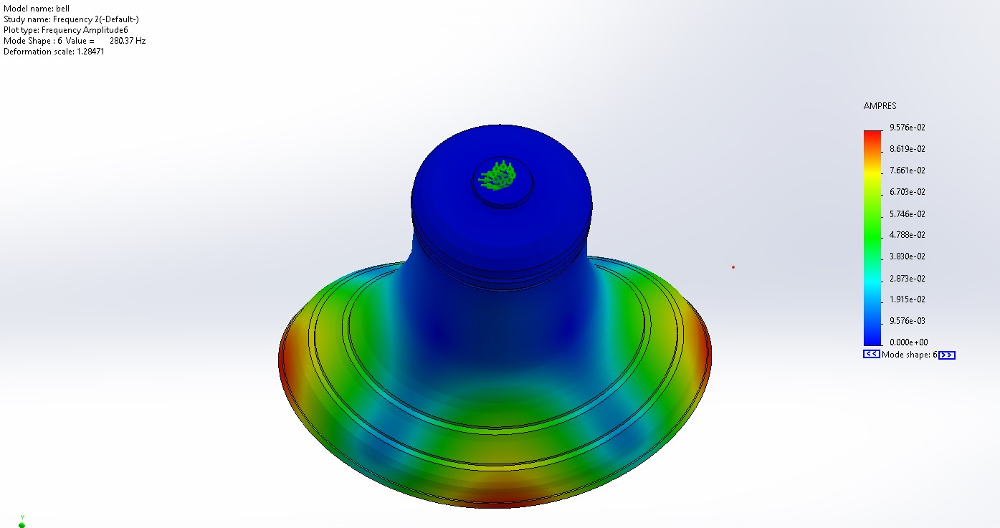
                            </p>

                            <h3 class="mb-0">MATLAB Implementation</h3> 
                            <p class="lead mb-5">Using the 10 frequencies found from the frequency study done in Solidworks, a simulated sound of the bell was created in MATLAB. The MATLAB code can be found on <a href="https://github.com/abingeorge07/ME360_Bell">GitHub</a>.
                                The following is the simulated sound of the bell determined using the MATLAB code.
                            </p>
                            <audio width ="200" height="10" controls>
                                <source src="assets/img/portfolio/BellSound.wav" type="audio/wav">
                            </audio>

                            <p><br><br></p>
                            <h2 class="page-section-heading text-center text-uppercase text-secondary mb-0">Exercise 3: In Class Plotter Exercise</h2>
                            <h3 class="mb-0">Exercise Objectives</h3>
                            <p class="lead mb-5">The goal of this exercise was to design 2.5 DOF robot that can draw a square. Each team was tasked to create one of the linear stages purely using foamboard, glue, few bearings and a linear actuator which consists
                                of a stepper motor, and a screw attached to it. Once this was done, 3 teams were to combine all the linear stages together to build the 2.5 DOF robot which was then programmed to draw a square using G-code.</p>
                                <h3 class="mb-0">Workflow</h3>    
                            <p class="lead mb-5">    My team was tasked with creating one of the X-direction linear stage. For the first step, we first created a base using the foamboard, then we created a carriage  
                                on which the Y-direction linear stage will be placed on. Finally, we created one more foamboard design that holds the end of the screw of the linear actuator. 
                                Once this was done, we combined our linear stage with that of two other teams. One other team built the other X-direction linear stage and the other team created a 
                                Y-direction linear stage that also carries another smaller stepper motor that holds a marker, which can linearly move the pen upwards or downwarads. Finally, few simple lines
                                of G-code was written, which essentially moved the linear actuators and the marker to draw a simple square on a piece of paper. The following video shows a demonstration
                                of the plotter in action.
                            </p>
                            <video width="800" height="500" controls>
                                <source src="assets/img/portfolio/vid2.mp4" type="video/mp4">
                                <!-- <source src="assets/img/portfolio/vid1.mp4.mov" type="video/mov"> -->
                              Your browser does not support the video tag.
                            </video> 
                            <p><br><br></p>
                            
                            
                            <h2 class="page-section-heading text-center text-uppercase text-secondary mb-0">Exercise 4: 4-Bar Tutorial</h2>
                            <h3 class="mb-0">Exercise Objectives</h3>
                            <p class="lead mb-5">The goal of this exercise was to get accustomed to using the motion analysis toolbox in order
                                to analyze a 4-bar mechanism. First, the 4-bar mecahnism was created as instructed by the tutorial manual, which can be found using this <a href="assets/img/portfolio/Four_Bar_Mechanism.pdf">link</a>. 
                                The following image shows the CAD model of the four bar mechanism, after completing a part of the tutorial.
                            
                            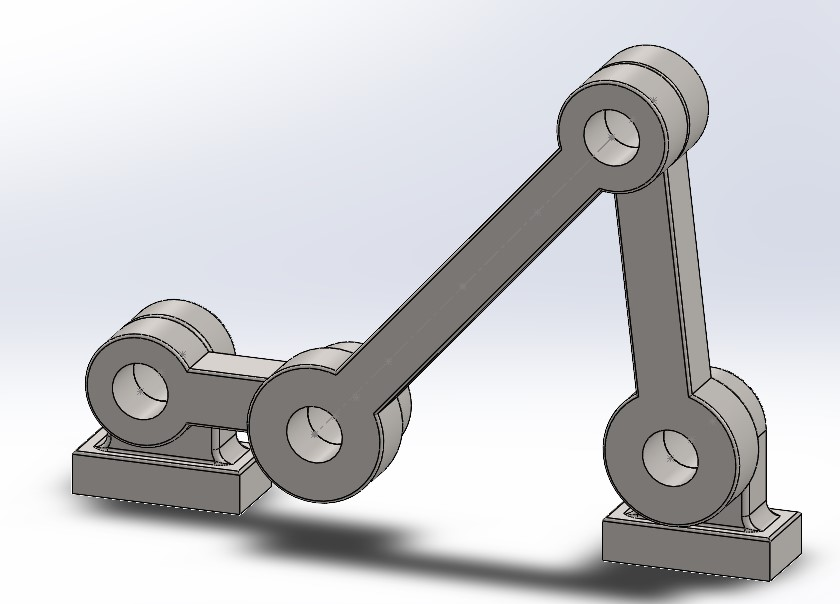 </p>
                            <p class="lead mb-5">The next part of this assignment was to conduct the motion analysis. A motor was attached to the 
                                crank of the 4-bar mechanism and set to rotate at a constant angular velocity of 20 revolutions per minute. The following video shows 
                                the motion of the 4-bar mechanism determined using the motion analysis tool from Solidworks.
                            </p>
                            <video width="800" height="500" controls muted>
                                <source src="assets/img/portfolio/vid3.mp4" type="video/mp4">
                                <!-- <source src="assets/img/portfolio/vid1.mp4.mov" type="video/mov"> -->
                              Your browser does not support the video tag.
                            </video> 
                            <p class="lead mb-5">The black trace line seen in the above video is the trace line of the midpoint of the 
                                extension bar. The following figure shows the plot of the Y position vs the X position of the midpoint of the extension
                                bar.
                            
                            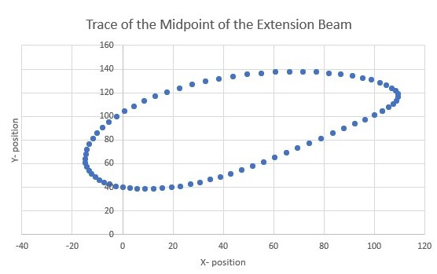</p>
                            <p class="lead mb-5">Once this was done, the material of every component (crank, extension, rocker, bearing)
                                were change to Plain Carbon Steel. Following this, a new motion analysis was started with gravity included in 
                                the motion analysis and the motor was, like before, connected to the crank and set to 20 RPM. The following 
                                figure shows how the torque on the crank bar changed with time.
                            
                            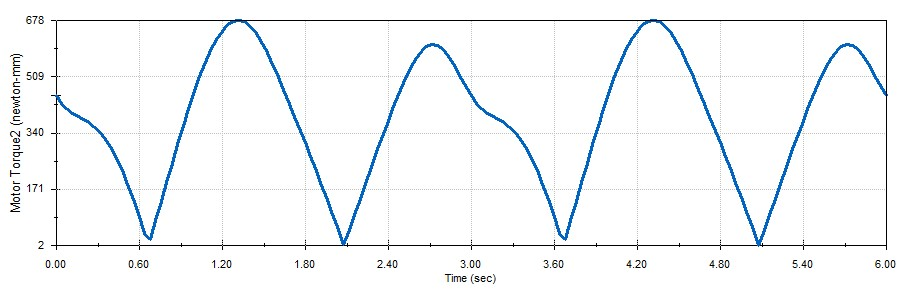</p>
                            <p class="lead mb-5">From the above figure, we can see that the torque applied by the motor is not a constant.
                                This makes total sense because as the crank is rotating, at som instance, the momentum and gravity of the bar 
                                will cause the crank to rotate. In order to keep a constant RPM, the motor, at these instances, will decrease 
                                the torque applied on the bar. For this reason, we see that the torque applied by the motor is not always constant.
                                It was also determined that the maximum torque of 678 N-mm was determined to be when the angle of the crank bar was
                                at 68 degrees from the X-axis. Once this was found, the reaction vertical forces of both the bearings were determined
                                using the motion analysis tool from Solidworks. The following figures show how the vertical reaction force on both 
                                the bearing changed with respect to time. 
                            
                            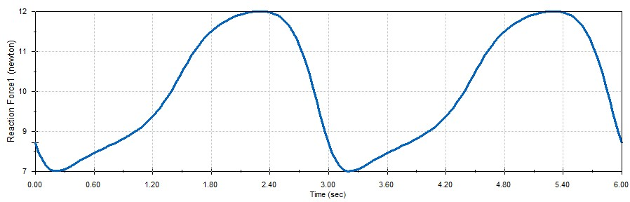
                            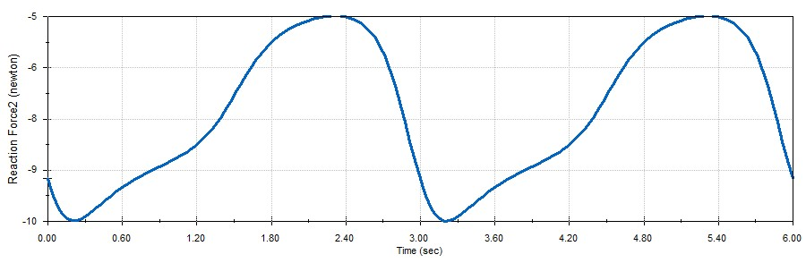</p>
                            <p class="lead mb-5">It should be noted that "Reaction Force1" corresponds to the reaction force of the bearing 1 (bearing on the left of the mechanism)
                                while "Reaction Force2" corresponds to that of bearing 2 (bearing to the right of the mechanism).
                                From the above figures, we can see that the maximum vertical reaction force on bearing 1 was 12 N, while 
                            the maximum vertical reaction force on bearing 2 was -10 N, the negative just means that the force was pointing in the 
                            negative Y -direction. Finally, a new motion study was started with the same conditions as before, except for the angular speed of the 
                            motor which was changed to 600 RPM. The following figure shows how the power of the motor changed with respect to time.
                        
                        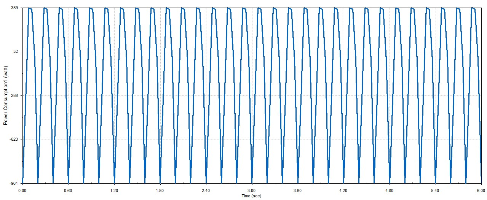 </p>
                        <p class="lead mb-5">From the above figure, we can see that the minimum power that the motor should possess in order to rotate
                            the crank bar with a constant velocity of 600 RPM should be 389 watts. It should be reiterated that there could be negative
                        torque values for the motor in order to keep a constant angular velocity. This is because in some instances gravity applies a torque on 
                    the crank bar or momentum of the crank bar can also influence the motion of the crank bar. In order to keep the constant angular velocity,
                    the motor is required to apply a negative torque on the crank to counteract any torque or force applied by gravity or momentum of the crank bar. 
                    It should also be stated that if one were to redo the whole tutorial, the results one will get will not be similar to the results
                found in this section. This is because the distance between the bearings were set to 190 mm rather than 130 mm as instructed by the tutorial manual.</p>

                </div>
            </div>
        </section>

                </div>
            </section>
            <hr class="m-0" /> 
            <!-- Interests-->
            <section class="resume-section" id="ceprojects"> 
                <div class="resume-section-content"> 
                    <h2 class="mb-5">CE Projects</h2>
                            <!-- Portfolio Section-->
                 <class="container">
                <!-- Portfolio Section Heading-->
                <h2 class="page-section-heading text-center text-uppercase text-secondary mb-0">EC 527: High Performance Programming</h2>
                <!-- Icon Divider-->
                <div class="divider-custom">
                    <div class="divider-custom-line"></div>
                    <!-- <div class="divider-custom-icon"><i class="fas fa-star"></i></div> -->
                    <div class="divider-custom-line"></div>
                </div>
                <!-- Portfolio Grid Items-->
                <div class="row justify-content-center">
                    <!-- Portfolio Item 1-->
                    <div class="col-md-6 col-lg-4 mb-5">
                        <div class="portfolio-item mx-auto" data-bs-toggle="modal" data-bs-target="#portfolioModal1">
                            <div class="portfolio-item-caption d-flex align-items-center justify-content-center h-100 w-100">
                                <div class="portfolio-item-caption-content text-center text-white"><i class="fas fa-plus fa-3x"></i></div>
                            </div>
                            
                        </div>
                    </div>
                    </div>
                </div>
            </section>

        </div>

        
        <!-- Bootstrap core JS-->
        <script src="https://cdn.jsdelivr.net/npm/bootstrap@5.1.3/dist/js/bootstrap.bundle.min.js"></script>
        <!-- Core theme JS-->
        <script src="js/scripts.js"></script>
    </body>
</html>
